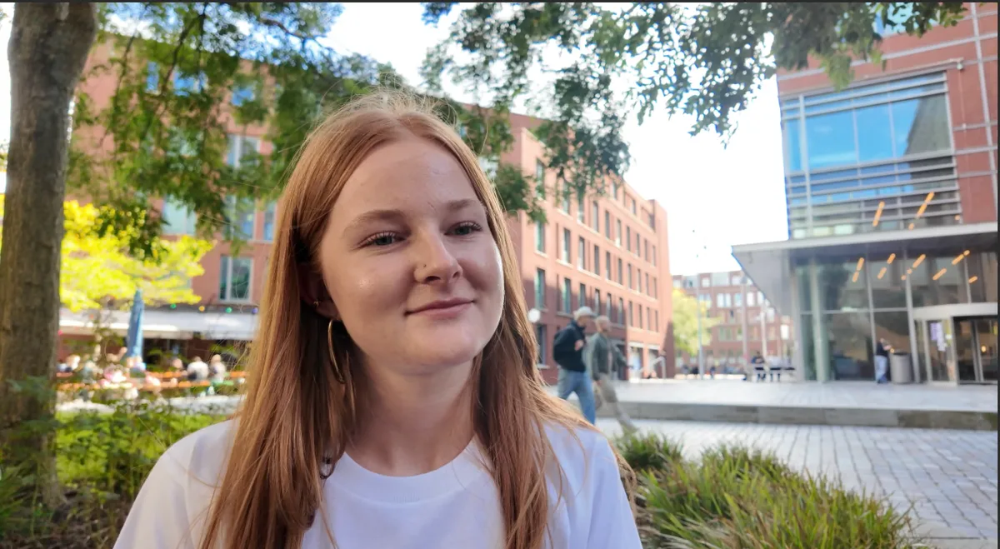
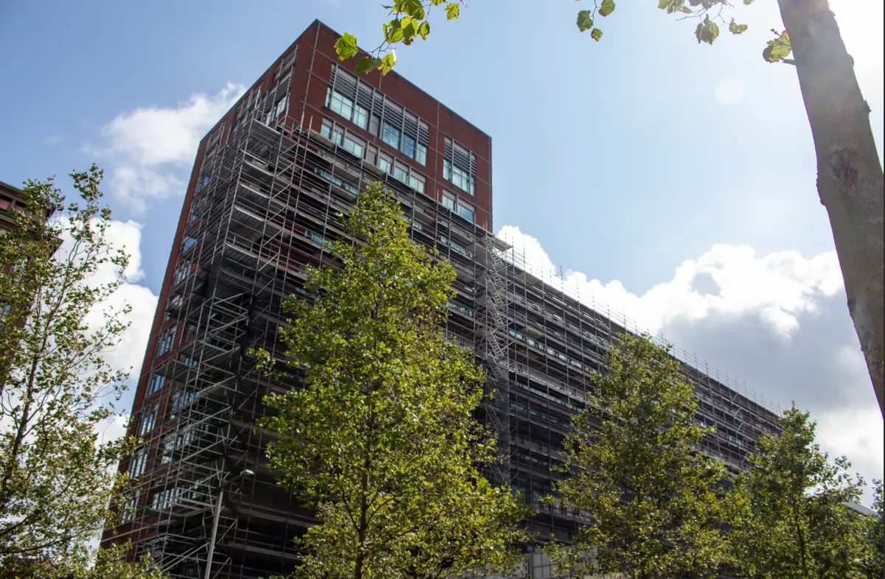

‘Niemand heeft je ingehaald, maar ineens loop je achter’
Over prestatiedruk en waarom iedereen verder lijkt te zijn dan jij.
Lees de column →Columns
Nieuwe columns over studeren, de HvA en alles eromheen.
Over prestatiedruk en waarom iedereen verder lijkt te zijn dan jij.
Lees de column →Sneller scannen, minder grote blokken.

Onderwijs
Studenten

Tech